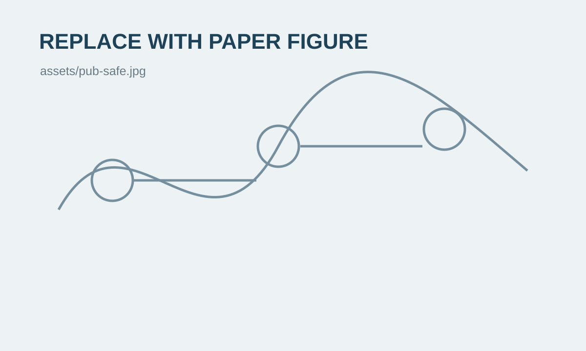

Our paper "Learning event-triggered controllers for linear parameter-varying systems from data" has been accepted by IEEE Transactions on Automatic Control.
Renjie Ma
I obtained my B. Eng degree in Automation from Hefei University of Technology, Hefei, China, in 2016, and PhD degree in Control Science and Engineering from Harbin Institute of Technology, Harbin, China, in 2022. I am currently an Associate Researcher (Associate Professor) of Mechanical Engineering at the State Key Laboratory of Robotics and Systems and the School of Mechatronics Engineering, Harbin Institute of Technology, Harbin, China. My current research interests include optimization and control for complex systems and intelligent robots. I serve as a member of Technical Committee on Embodied Artificial Intelligence of Chinese Association of Automation and a member of Technical Committee on Data-Driven Control and Monitoring of IEEE Industrial Electronics Society.
Updates
Latest News
Our paper "Event-triggered robust tracking control of a networked commercial aircraft system during ascent under communication constraints" has been accepted by IEEE Transactions on Network Science and Engineering.
Our paper "Self-triggered fault-tolerant control of cyber-physical Markovian jump systems via descriptor sliding-mode observer" has been accepted by IEEE Transactions on Industrial Cyber-Physical Systems.
Research
Intelligent Robotic Control
My research develops learning, optimization, and feedback-control methods with rigorous guarantees on stability, safety, robustness, and communication efficiency. Current interests span neural learning control, safe motion planning and control, data-driven and adaptive control, aperiodic-sampled control, and robotic systems.
Imitation Learning Control and Robustness Assessment for Soft Robot Toward Space Environment Exploration
National Natural Science Foundation of China (No. 62503133).
Imitation Learning Motion Control for Soft Robots
Natural Science Foundation of Heilongjiang Province (No. LH2024F026).
Safe & Resilient Cyber-Physical Systems
Safety-critical control, secure estimation, attack-resilient control, event-triggered communication, and networked systems.
Robotic Control
Learning and robust control for biomimetic soft robots, robotic manipulators, autonomous ground vehicles, and microrobots.
Academic Publications
Journal Papers
Representative publications. Paper figures can be added later to replace the current graphical placeholders.

IEEE Transactions on Intelligent Transportation Systems
Aperiodic-Sampled Fault-Tolerant Control for Autonomous Ground Vehicle via Descriptor Reduced-Order Observer
Experimental fault-tolerant tracking control for an autonomous ground vehicle using descriptor reduced-order observation.
Community
Academic Activities
Professional Service
Reviewer and academic service for journals and conferences in control, automation, intelligent systems, and robotics.
Conferences
Regular participation in international control, automation, and industrial informatics conferences.
Research Collaboration
Interested in collaborations at the intersection of machine learning, nonlinear control, cyber-physical systems, and robotics.
Teaching
Teaching & Mentoring
Graduate student supervision and research mentoring in control science, intelligent systems, and robotics.
Add courses, lecture notes, student projects, and recruitment information here.